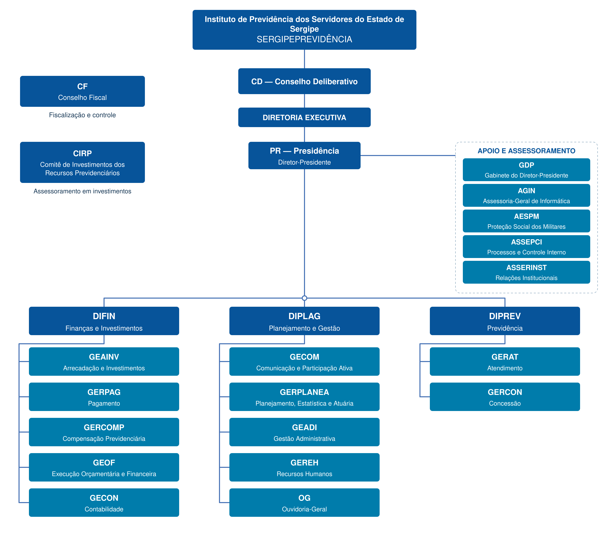

Estrutura organizacional do Instituto de Previdência dos Servidores do Estado de Sergipe.
Estrutura Organizacional

Referência: Lei nº 5.852/2006.
Norma da estrutura organizacional
Texto compilado da Lei nº 5.852, de 20 de março de 2006, que dispõe sobre a criação do Instituto.
Identidade Estratégica
Missão
Garantir a concessão dos benefícios previdenciários aos segurados e seus beneficiários, por meio de gestão ética, transparente e participativa, de forma acolhedora e prestativa.
Visão
Ser referência nacional na gestão dos Regimes Próprios de Previdência Social, com base nos pilares da Gestão Governamental, Controle Interno e da Educação Previdenciária, com foco em inovação.
Valores
Ética; Cordialidade; Transparência; Participação e Justiça.
Política da Qualidade
O SERGIPEPREVIDÊNCIA se compromete a promover a qualidade na concessão de benefícios previdenciários conforme requisitos legais, assegurando a satisfação dos segurados, através da observância de seus direitos e garantias e da busca permanente pela melhoria do Sistema de Gestão da Qualidade.
Competências da Autarquia
De acordo com a Lei Nº 5.852 de 20 de março de 2006, são competências do órgão:
- I – inscrição e cadastro de segurados ativos, inativos, dependentes e pensionistas;
- II – processamento dos pedidos de concessão, alteração ou cancelamento de benefícios previdenciários e das respectivas folhas de pagamentos;
- III – acompanhamento e controle da execução dos Planos de Benefícios Previdenciários e do respectivo Plano de Custeio Atuarial;
- IV – acompanhamento da execução dos cálculos atuariais periódicos, observando os aspectos e requisitos estabelecidos na legislação pertinente;
- V – execução das ações de administração de pagamento dos benefícios previdenciários;
- VI – proposição de normas e procedimentos em assuntos afetos à sua área de atuação;
- VII – manutenção de interface permanente com as áreas de recursos humanos dos Poderes Executivo, Legislativo e Judiciário, do Tribunal de Contas do Estado, e do Ministério Público Estadual, bem como das suas autarquias e fundações públicas;
- VIII – execução e gerenciamento das folhas de pagamento dos benefícios previdenciários;
- IX – prestação de assessoramento técnico abrangente ao Conselho Estadual de Previdência Social – CEPS, sob a forma de estudos, pesquisas, pareceres técnico-administrativos, consolidação das informações em nível global, entre outros;
- X – administração de bens móveis e imóveis de propriedade da autarquia;
- XI – exercer outras atividades ou atribuições correlatas, ou inerentes, no âmbito da sua finalidade, e as que forem regularmente conferidas ou determinadas.
Competências dos órgãos e diretorias
Consulte as atribuições previstas na Lei nº 5.852/2006 — texto compilado.
Competências dos Órgãos Colegiados
Conselho Deliberativo — CD
Lei nº 5.852/2006 · art. 8º
- I – Formular diretrizes para execução dos objetivos do IPESPREVIDÊNCIA;
- II – Discutir e resolver sobre:
- a) assuntos de interesse do IPESPREVIDÊNCIA, que lhe sejam apresentados;
- b) matérias inerentes ao exercício das atividades e ao cumprimento das finalidades e objetivos do IPESPREVIDÊNCIA;
- c) dúvidas decorrentes da interpretação desta Lei, do Regimento Interno do próprio Conselho Deliberativo, ou do Regulamento Geral do IPESPREVIDÊNCIA;
- d) procedimentos administrativos e financeiros do IPESPREVIDÊNCIA para implantação de sua organização e para fiel cumprimento da legislação aplicável aos bens, pessoal e outros recursos da autarquia;
- III – Propor:
- a) a alteração da estrutura básica e das competências dos Órgãos do IPESPREVIDÊNCIA previstas em Lei;
- b) a aprovação, por Lei, da criação de cargos de provimento efetivo, e de provimento em comissão, e de funções de confiança do IPESPREVIDÊNCIA;
- c) ao Governo do Estado, a obtenção de autorização legal para alienação ou gravame de bens imóveis;
- d) a aprovação de medida regular para realização de operações de créditos;
- e) a abertura de créditos especiais;
- f) a aprovação, pelo Conselho Estadual de Previdência Social – CEPS:
- 1. das diretrizes e regras relativas à aplicação dos recursos econômico-financeiros do RPPS/SE, à política de benefícios, e à adequação entre os planos de custeio e de benefícios;
- 2. dos planos e programas de benefícios e custeio do RPPS/SE;
- 3. de outras medidas regulares que, de acordo com a legislação pertinente, devam ser submetidas ao CEPS, ou forem da competência do mesmo Conselho Estadual.
- IV – Aprovar:
- a) o Regulamento Geral do IPESPREVIDÊNCIA, e suas alterações, submetendo à homologação do Governador do Estado;
- b) o Regimento Interno do próprio Conselho;
- c) o Plano Anual de Trabalho do IPESPREVIDÊNCIA;
- d) os relatórios, balancetes, balanços, demonstrativos financeiros, e prestação de contas das atividades do IPESPREVIDÊNCIA, e, se for o caso, da própria Presidência da autarquia;
- e) a proposta orçamentária anual do IPESPREVIDÊNCIA e respectivas modificações ou alterações;
- f) a prestação de contas de convênios firmados com entidades não-governamentais;
- g) o montante dos recursos financeiros que o IPESPREVIDÊNCIA pode destinar a programas assistenciais de seus servidores;
- h) as instruções normativas para execução de procedimentos administrativos e/ou financeiros.
- V – Autorizar:
- a) a alienação de bens móveis;
- b) a aquisição de bens imóveis, exceto quando se tratar de objeto de desapropriação;
- c) a celebração de convênios com entidades não-governamentais;
- VI – Deliberar:
- a) sobre os planos, programas e orçamentos do IPESPREVIDÊNCIA, e sobre o andamento de sua execução;
- b) sobre a organização interna, normas de gestão, procedimentos e instruções administrativas;
- c) sobre contrato de execução de obras, fornecimento de materiais e prestação de serviços, quando submetidos à sua apreciação pela Presidência da autarquia;
- d) sobre convênios, contratos e outros ajustes;
- e) sobre os contratos de Locação e de Permissão ou Concessão Onerosa de Direito Real de uso de Bens Imóveis;
- f) Sobre outras medidas ou assuntos que regularmente forem submetidos à sua apreciação e deliberação.
- VII – Exercer ou desempenhar outras atividades ou atribuições correlatas, ou inerentes à finalidade do IPESPREVIDÊNCIA.
Conselho Fiscal — CF
Lei nº 5.852/2006 · art. 8º-J
- I – zelar pela gestão econômico-financeira;
- II – examinar o balanço anual, balancetes e demais atos de gestão;
- III – verificar a coerência das premissas e resultados da avaliação atuarial;
- IV – acompanhar o cumprimento do plano de custeio, em relação ao repasse das contribuições e aportes previstos;
- V – examinar, a qualquer tempo, livros e documentos;
- VI – emitir parecer sobre a prestação de contas anual da unidade gestora do RPPS, nos prazos legais estabelecidos;
- VII – relatar as discordâncias eventualmente apuradas, sugerindo medidas saneadoras;
- VIII – elaboração, publicação e controle sobre a efetivação de plano de trabalho anual, estabelecendo os procedimentos, o cronograma de reuniões, o escopo a ser trabalhado e os resultados obtidos;
- IX – elaboração de parecer ao relatório de prestação de contas, no qual devem constar os itens ressalvados com as motivações, recomendações para melhoria e áreas analisadas;
- X – aprovar o seu regimento interno;
- XI – exercer demais funções dispostas em regulamento próprio.
Parágrafo único. O Conselho Fiscal – CF e o Conselho Estadual de Previdência Social – CEPS têm funções distintas e não se confundem entre si, sendo o primeiro a entidade fiscalizadora da Autarquia Previdenciária – SERGIPEPREVIDÊNCIA e o segundo, do Fundo Financeiro Previdenciário de Sergipe – FINANPREV.
Comitê de Investimentos dos Recursos Previdenciários — CIRP
Lei nº 5.852/2006 · art. 8º-D
- I – auxiliar no processo decisório quanto à execução da política de investimentos;
- II – acompanhar as avaliações das rentabilidades, cujas decisões serão registradas em ata;
- III – acompanhar a alocação dos recursos de acordo com a política de investimentos e Resolução do Conselho Monetário Nacional – CMN.
- IV – realizar reuniões, pelo menos bimestralmente, podendo ocorrer concomitantemente com a Reunião do Conselho Estadual de Previdência Social;
- V – Solicitar informações sobre os investimentos;
- VI – fornecer subsídios para a elaboração ou alteração de política de investimentos;
- VII – propor aplicações e resgates, observados os limites legais de cada investimento;
- VIII – acompanhar a execução da política de investimentos.
Competências da Diretoria Executiva
Presidência — PR
Lei nº 5.852/2006 · art. 11
A Presidência exerce a direção geral dos serviços administrativos, financeiros, técnicos e operacionais da Autarquia, nos termos do art. 10.
- I – Dirigir, em grau hierárquico superior, as atividades e serviços da autarquia, superintendendo a sua administração e os seus negócios;
- II – Cumprir e fazer cumprir a legislação que estiver em vigor, as Resoluções e os Atos do Conselho Estadual de Previdência Social – CEPS, e do Conselho Deliberativo da Autarquia, visando a execução da política de previdência social do serviço público;
- III – Representar o IPESPREVIDÊNCIA, ativa e passivamente, em juízo ou fora dele, podendo designar procuradores e prepostos;
- IV – Organizar os serviços do IPESPREVIDÊNCIA, expedindo os atos administrativos que para tanto se façam necessários;
- V – Propor ao Conselho Deliberativo a criação ou modificação de Unidades que integrem a estrutura organizacional do IPESPREVIDÊNCIA, bem como as alterações e transformações de cargos em comissão e funções de confiança, desde que não resultem em aumento de despesas;
- VI – Proferir decisões em processos administrativos de sua competência, bem como praticar os atos relativos à administração dos servidores do IPESPREVIDÊNCIA;
- VII – julgar, em primeira instância, os recursos interpostos pelos servidores do IPESPREVIDÊNCIA, encaminhando ao Conselho Deliberativo, conforme o caso, se julgar necessário;
- VIII – Autorizar a abertura de créditos suplementares, até o limite estabelecido em lei, submetendo à apreciação do Conselho Deliberativo pedido de abertura de crédito acima dos limites legalmente previstos;
- IX – Aplicar os recursos do IPESPREVIDÊNCIA, conjuntamente com a Diretoria Administrativa e Financeira;
- X – Promover, na forma legal, a aquisição e, se necessário, autorização legislativa, por intermédio do Governo do Estado, para gravame ou alienação de bens imóveis, observadas as normas constitucionais, e legislação estadual específica;
- XI – submeter à apreciação do Conselho Deliberativo justificativa expondo sobre a necessidade de aquisição de veículos, equipamentos, linhas telefônicas, bens móveis e materiais permanentes em geral;
- XII – Promover a alienação, permuta e comodato de bens móveis do IPESPREVIDÊNCIA, após autorização do Conselho Deliberativo, observada a legislação pertinente;
- XIII – Determinar a realização de licitações e decidir quanto à aprovação das conclusões dos procedimentos licitatórios;
- XIV – Firmar contratos, celebrar convênios, acordos ou ajustes, após manifestação, se cabível, do Conselho Deliberativo;
- XV – Prover as funções de confiança e os cargos em comissão, e, autorizado pelo Conselho Deliberativo, admitir e demitir ou despedir os servidores do IPESPREVIDÊNCIA, na forma da legislação e das normas regulamentares;
- XVI – Designar substitutos eventuais dos demais Diretores Executivos do IPESPREVIDÊNCIA;
- XVII – Promover a elaboração da proposta de orçamento do IPESPREVIDÊNCIA e a conseqüente execução orçamentária;
- XVIII – Apresentar, ao Conselho Deliberativo, relatórios, balancetes, balanços, demonstrativos financeiros e prestações de contas das atividades da autarquia, e, se for o caso da própria Presidência;
- XIX – Delegar atribuições de sua competência, respeitadas as restrições ou limites legais;
- XX – Exercer outras atividades inerentes à Presidência, bem como as que forem regularmente conferidas ou determinadas.
§ 1º Os atos do Diretor-Presidente do IPESPREVIDÊNCIA revestem-se da forma jurídica de Portaria.
§ 2º Em seus afastamentos, ausências ou impedimentos regulares de natureza eventual, o Diretor-Presidente deve ser substituído pelo titular de uma das Diretorias Executivas, mediante designação através de Portaria da Presidência.
Diretoria de Planejamento e Gestão — DIPLAG
Lei nº 5.852/2006 · art. 20
À Diretoria de Planejamento e Gestão – DIPLAG compete exercer a direção do planejamento estratégico, das atividades administrativas, promover, programar, coordenar, executar e acompanhar as atividades-meio da autarquia, compreendendo os serviços de Administração Geral nas áreas de recursos humanos, material, patrimônio, compras e suprimentos, carteira imobiliária e habitacional, a elaboração de estudos estatísticos, econômicos e atuariais, a interação eficaz com os segurados, a coordenação de programas de participação ativa e atividades culturais, e exercer outras atividades correlatas, e, ainda, as que lhe forem regularmente conferidas ou determinadas.
Diretoria de Finanças e Investimentos — DIFIN
Lei nº 5.852/2006 · art. 18
À Diretoria de Finanças e Investimentos – DIFIN compete exercer a direção das atividades financeiras e de investimentos, bem como aquelas referentes ao acompanhamento e controle da arrecadação dos recursos destinados à previdência, e promover, programar, coordenar, executar e acompanhar as atividades-meio da autarquia, compreendendo os serviços de execução orçamentária, financeira e contábil, informação, documentação, serviços ou atividades auxiliares, e exercer outras atividades correlatas, e, ainda, as que lhe forem regularmente conferidas ou determinadas.
Diretoria de Previdência — DIPREV
Lei nº 5.852/2006 · art. 21-A
À Diretoria de Previdência – DIPREV compete exercer a direção das atividades relativas à previdência, a cargo do SERGIPEPREVIDÊNCIA, e promover, coordenar, acompanhar, supervisionar e executar os serviços referentes à inscrição, ao cadastramento e atendimento dos segurados e beneficiários, à concessão e/ou alteração, controle e pagamento de benefícios, bem como referentes ao acompanhamento e controle da arrecadação de recursos regularmente destinados à previdência, e a desenvolvimento e aplicação de tecnologia na área previdenciária, e exercer outras atividades correlatas, bem como as que lhe forem regularmente conferidas ou determinadas.
Responsáveis pela gestão
Diretor-Presidente — José Roberto de Lima Andrade
Currículo resumido
José Roberto de Lima Andrade está no cargo desde 2016. É graduado em Economia pela Universidade Federal de Sergipe (1992), mestre em Desenvolvimento Econômico pela Universidade Federal do Paraná (1997) e doutor em Economia e Turismo pela Universidade de São Paulo (2002).
É professor associado do Departamento de Economia da UFS desde 2002, nos cursos de graduação e mestrado. Possui experiência nas áreas de métodos quantitativos, elaboração de projetos e finanças, além de certificações profissionais relacionadas ao mercado financeiro e à avaliação de empresas.
Foi diretor-presidente da Escola de Administração e Gestão Pública, presidente da Empresa Sergipana de Turismo e presidente da Fundação de Apoio à Pesquisa e Extensão de Sergipe. Também atuou como consultor em estudos de viabilidade econômica de projetos para o Banco Interamericano de Desenvolvimento.
Diretor de Previdência — Gildo de Souza Xavier Filho
Currículo resumido
Gildo de Souza Xavier Filho está no cargo desde janeiro de 2021. É graduado em Engenharia Civil pela Universidade Federal de Sergipe (1988) e pós-graduado em Gestão de Desenvolvimento Regional Sustentável pela Universidade Federal da Bahia (2012).
Possui mais de 20 anos de experiência nas áreas de repasse de recursos do Orçamento Geral da União e de habitação na Caixa Econômica Federal. Implantou e gerenciou a Gerência de Habitação da Caixa em Sergipe e coordenou a implantação e o acompanhamento do Programa de Aceleração do Crescimento no âmbito da Gerência de Desenvolvimento Urbano da instituição.
Diretor de Finanças e Investimentos — José Normando da Mota Guimarães Filho
Currículo resumido
José Normando da Mota Guimarães Filho está no cargo desde 2017. É graduado em Engenharia Agronômica pela Universidade Federal da Paraíba, especialista em Administração de Negócios e possui MBA em Formação Geral para Altos Executivos pela Universidade Federal da Bahia. Também é especialista em Didática do Ensino Superior pela Faculdade Pio Décimo.
Iniciou a vida profissional no Banco do Brasil em 1986 e exerceu funções como caixa executivo, supervisor, gerente de administração, gerente de negócios e gerente-geral. Também integrou o Conselho Fiscal do Sebrae/SE.
Possui capacitações e certificações nas áreas de economia e finanças, gestão organizacional e de pessoas, controles internos, risco operacional, setor público, regime próprio de previdência social e investimentos, incluindo certificação profissional Anbima CPA-20.
Diretor de Planejamento e Gestão — Bruno Rolemberg Dantas Barreto
Currículo resumido
Bruno Rolemberg Dantas Barreto está no cargo desde fevereiro de 2025. É graduado em Engenharia Mecânica pela Universidade Federal de Sergipe, pós-graduado em Gerenciamento de Projetos pela Fundação Getúlio Vargas e em Engenharia de Segurança do Trabalho pela Universidade Cândido Mendes. É mestre e doutorando em Filosofia pela Universidade Federal de Sergipe.
Integra a carreira de Especialista em Políticas Públicas e Gestão Governamental do Estado de Sergipe desde 2019. Já atuou na Secretaria de Estado Geral de Governo e na Secretaria de Estado da Fazenda, onde exerceu os cargos de Superintendente-Geral de Finanças Públicas e Superintendente de Planejamento, Projetos e Modernização Institucional.
É certificado Project Management Professional pelo Project Management Institute e possui certificações profissionais do Ministério da Previdência Social nas categorias de membro de Comitê de Investimentos e dirigente de Unidade Gestora.
Endereço e atendimento
Endereço: Praça General Valadão, 32 – Centro – Aracaju/SE, CEP: 49010-520
Horário de funcionamento: Segunda a Sexta: das 7h às 13h
E-mail: atendimento@sergipeprevidencia.se.gov.br
Telefone geral: (79) 3198-0801
Telefone / WhatsApp: (79) 3198-0800
CNPJ: 08.042.552/0001-74
Ouvidoria: Ouvidoria do Estado de Sergipe
Canais institucionais: WhatsApp do SergipePrevidência · Instagram do SergipePrevidência
Perguntas frequentes
-
O que é Regime Próprio de Previdência Social (RPPS)?
O RPPS consiste no conjunto de regras, previstas em lei, que dispõem sobre a concessão de benefícios previdenciários aos titulares de cargo efetivo, conforme as normas estabelecidas na Constituição Federal, para garantir, desse modo, aos segurados e seus dependentes os benefícios previdenciários de aposentadoria e pensão por morte.
-
Quem está vinculado ao RPPS-SE?
Todo servidor público detentor de cargo de provimento efetivo (concursado), ativo ou inativo, e pensionista dos Poderes e Instituições do Estado de Sergipe, bem como os magistrados, membros do Ministério Público, do Tribunal de Contas, da Defensoria Pública e os militares do Estado, incluindo ainda seus dependentes.
-
Quem pode ser dependente?
É beneficiário do RPPS-SE, na qualidade de dependente do segurado: o cônjuge, a companheira ou o companheiro; o filho menor de 21 anos ou inválido de qualquer idade; ou, ainda, os pais, inexistindo os dependentes anteriormente citados. Atenção: equipara-se a filho o enteado e o menor sob tutela ou guarda judicialmente decretada, desde que não possua condições suficientes para sustento próprio e educação e ainda não tenha outra vinculação previdenciária, como a de ser segurado ou beneficiário dos pais ou responsável.
-
Como ocorre a inscrição para ser segurado no RPPS-SE?
A inscrição do segurado é automática assim que o servidor toma posse no cargo efetivo para o qual tenha sido nomeado, após ingresso mediante concurso público.
-
O servidor público estadual pode perder a qualidade de segurado?
Sim. O servidor perde a condição de segurado se for exonerado do cargo efetivo ou se vier a falecer. Nesse último caso, o direito ao pagamento de pensão por morte é destinado aos dependentes.
-
Os dependentes podem perder a qualidade de beneficiário?
Sim. Perde a condição de dependente o cônjuge: pela convolação de novas núpcias ou união estável, separação judicial ou divórcio sem alimentos, ou anulação do casamento. O companheiro ou a companheira: pela retratação da indicação do segurado ou pela cessação da união estável com o segurado ou segurada, enquanto não sobrevierem alimentos. O filho não inválido: pelo casamento e pelo implemento da idade definida em lei, ou seja, 21 anos. Também perde essa condição o beneficiário economicamente dependente quando cessada a dependência, o inválido quando cessada a invalidez e qualquer beneficiário em razão do falecimento.
-
Como solicitar algum serviço pela internet?
Com exceção da concessão de pensão por morte, os requerimentos podem ser feitos pelo e-mail atendimento@sergipeprevidencia.se.gov.br. Na página Serviços, estão relacionados os serviços e os documentos obrigatórios para cada solicitação.
O agendamento de atendimento presencial pode ser realizado pelo telefone (79) 3198-0800.
-
Como renovar a carteirinha do Ipesaúde?
O SergipePrevidência e o Ipesaúde são órgãos estaduais diferentes. Os serviços realizados pelo SergipePrevidência estão relacionados na página Serviços. Para informações sobre o Ipesaúde, entre em contato pelo telefone (79) 3226-2828 ou acesse o site do Ipesaúde.
-
Como fazer a Prova de Vida?
A Prova de Vida teve início em 1º de janeiro de 2022 e continua durante todo o ano. O procedimento administrativo é obrigatório para aposentados e pensionistas do Governo do Estado e deve ser realizado anualmente, no mês de nascimento do beneficiário.
Consulte todas as informações na página Prova de Vida.
-
Como obter o contracheque?
O contracheque e outros documentos e informações do segurado estão disponíveis no Portal do Segurado. Ao acessar, o sistema solicitará o CPF da pessoa cadastrada no SergipePrevidência e a senha. Caso tenha esquecido a senha, ela poderá ser solicitada pelo próprio sistema, na opção “Esqueceu a senha”. A nova senha gerada expira em poucos segundos.
O contracheque não é disponibilizado em formato impresso na sede do órgão, conforme orientação institucional vigente.
-
Como obter o comprovante de rendimentos?
O documento está disponível exclusivamente pelo Portal do Segurado e pelo Aplicativo Meu RPPS.
O comprovante de rendimentos não é disponibilizado em formato impresso na sede do órgão, conforme orientação institucional vigente.
-
Como faço para obter a minha senha de acesso ao Portal do Segurado?
Ao acessar o Portal do Segurado, o sistema solicitará o CPF do segurado e a senha. Caso tenha esquecido a senha, ela poderá ser solicitada pelo próprio sistema, na opção “Esqueceu a senha”. A nova senha gerada expira em poucos segundos.
-
Quem tem direito à aposentadoria por invalidez?
Tem direito à aposentadoria por invalidez todo segurado que for considerado incapaz de exercer as atribuições do cargo efetivo, bem como qualquer função pública, conforme laudo pericial emitido por Junta Médica oficial.
-
Como ocorre a aposentadoria compulsória?
O segurado é afastado automaticamente aos 75 anos de idade pelo Poder ou órgão de lotação, que adotará as medidas necessárias para o processo de aposentadoria junto ao SergipePrevidência. Os proventos são proporcionais ao tempo de contribuição, conforme os cálculos previstos na Constituição.
-
Quem pode requerer a Certidão de Tempo de Contribuição junto ao SergipePrevidência?
Qualquer pessoa que tenha sido vinculada ao RPPS-SE como servidor público efetivo ou que tenha contribuído em favor do Fundo de Previdência do Estado de Sergipe, mas não detenha mais vínculo com o referido regime.
-
Como saber a data de pagamento do meu benefício?
O calendário de pagamento é divulgado pelo Governo do Estado. Consulte o calendário de pagamento dos servidores do Poder Executivo para 2026.